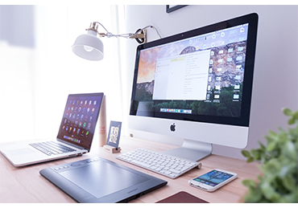

Passionné
Je suis passionné par la technologie informatique, j’aime coder, surtout quand je trouve de nouveaux idées. Même lorsque je rencontre des problèmes et des bugs (ce qui est souvent le cas), je n’abandonne pas, je persévère.
If you just work hard enough at it
RAMAHERISOA
Toky Nirina
Je suis RAMAHERISOA Toky Nirina apprenti développeur, je suis né le 19 Octobre 2000.
Actuellement en 3 ème année en Electronique, Systèmes Informatiques et Intelligence Artificielle
à L'ISPM Antsobolo
Mon principale objectif est de devenir un grand développeur, capable de créer des applications et
des logiciels innovateurs.
J’ai étudié à l’école Fenosoa en primaire, puis à La Perlière Ambatoroka en secondaire et j’étais lycéen à Saint Michel Amparibe jusqu’à avoir mon Bac.
J’ai obtenu :
- Mon CEPE en : 2011
- mon BEPC en : 2015
- mon BAC série D en : 2018 avec mention Assez-Bien
Puis je me suis inscris à l’ISPM où j’ai réussi le concours d’entrée dans la filière ESIIA ou Electronique, Système Informatique et Intelligence Artificiel.
J’ai toujours été intéressé par les technologies de l’informatique : les ordinateurs, les jeux vidéo, les applications mobiles et tout ça.
Mais j’ai réellement commencé à entrer dans ce vaste monde qu’en première année, où j’ai découvert la programmation.
J’ai commencé avec le Pascal que je connais un peu les bases, entre temps j’ai commencé a découvrir L’html et le Css.
Puis en deuxième année j’ai enchainé avec le Langage C.
Puis le Java en apprenant le concept du POO, où je me suis appliqué avec des petits projets.
Et aussi j’ai un peu connaissances en JavaScript avec lequel j’ai faits quelques mini-projets.
L'année dernière, j'ai expérimenté l'utilisation du CMS Wordpress pour créer des site e-commerce.
Pour une mini projet que j'avais à faire l'année dernière, j'ai réaliser un site e-commerce en utilisant le CMS Wordpress
Ēostre UI Kit is made following the latest design trends with focus on usability and fast workflow.

Quick concept for a fictitious wildlife exploration app. Grab the PSD and start your own exploration.

Je suis passionné par la technologie informatique, j’aime coder, surtout quand je trouve de nouveaux idées. Même lorsque je rencontre des problèmes et des bugs (ce qui est souvent le cas), je n’abandonne pas, je persévère.
Dynamique, énergétique, on peut dire que je suis sportif. Je pratique le sport surtout pour me garder en pleine santé et comme passe temps. J’adore particulièrement le Basket.
Je suis très motivé et surtout Ambitieux. Je vise haut, très haut même si on se permet de rêver un peu. Et quand je le suis, je peux être un grand travailleur, surtout quand j’aime ce que je fais. Je suis persévérant et je n’aime pas perdre.